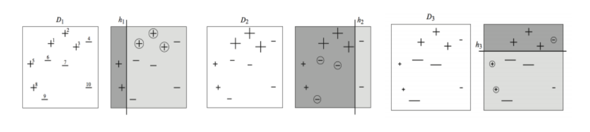
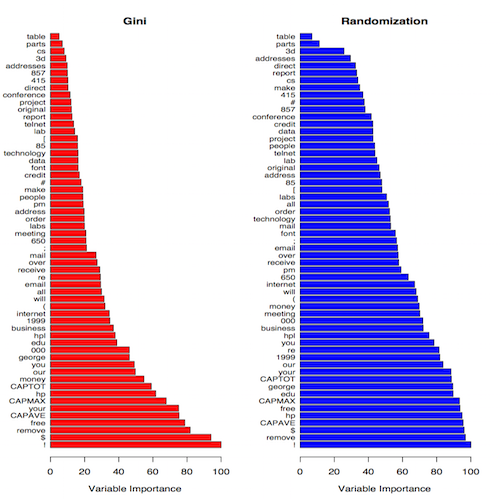

2W questions
Bagging
Boosting
Random Forest
AdaBoost / Gradiant Boosting
Conclusion
Bagging and Boosting
very short introduction to tree based model.
Henry Lin
替代役
Outline
2W questions
- Why
- Why this algorithm exists? (What kind of problem it solves?)
- How
- How this algorithm formulated?
Why Bagging?
Bagging exploits that idea to address the
overfitting issuein a more fundamental manner. It was invented by Leo Breiman, who called it "bootstrap aggregating" or simply "bagging" (reference: "Bagging predictors," Machine Learning, 24:123-140, 1996, cited by 7466).
The decision trees suffer from high variance and Bagging(Boostrap Aggregation) is a procedure to reduce variance.
How Bagging Works?
\[\hat{f}_{bag}(x) = \frac{1}{B}\sum_{B}^{b=1}\hat{f}^{*b}(x)\]

Why Boosting?
The motivation for boosting was a procedure that combines the outputs of many “weak” classifiers to produce a powerful “committee.”
How Boosting Works?

Bagging V.S. Boosting
Bagging reduce the variance
Boosting learned from the mistakes.
Why Random Forests?
Trees are ideal candidates for bagging, since they can capture complex interaction structures in the data, and if grown sufficiently deep, have relatively low bias. Since trees are
notoriously noisy, they benefit greatly from theaveraging.
Random Forests = Bagging + C&RT decision trees
Detail of Random Forests
- For classification, the default value for m is \(\sqrt{p}\) and the minimum node size is one.
- For regression, the default value for m is \(\frac{p}{3}\) and the minimum node size is five.
How Random Forest Works?

Why Boosting trees?
Boosting tree can be considered as a human learning process. Trees are just like human decision-making process and boosting is a way to learn by weak learner, which means boosting + tree is learned by mistakes.
How Boosting Work?

Random Forests V.S. Boosting trees
- Fature Importance
- Test-error Comparasion
Feature Importance

Test-error Comparasion

Conclusion
Generally, Boosting has better performance than Bagging. However, Sometimes Random Forests have better performance.
The advantage of Random Forests is more simple to train and tune than boosting trees.